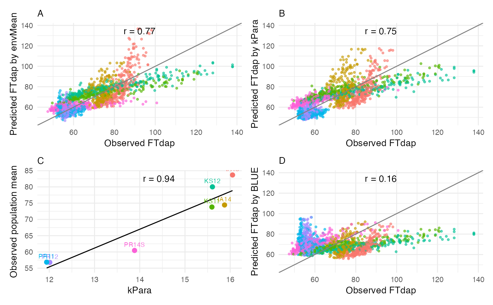

Plot LOOCV/Forecast Prediction Results
plot_prediction_result.RdFour-panel visualization: (A) predicted by envMean vs observed, (B) predicted by kPara vs observed, (C) kPara vs population mean, (D) predicted by BLUE vs observed.
Usage
plot_prediction_result(
obs_prd,
env_mean_trait,
trait = "Trait",
kpara_name = "kPara",
env_colors = NULL
)Arguments
- obs_prd
Data.frame from
loocvorforecast_next_yearwith columns Prd_trait_mean, Prd_trait_kPara, Obs_trait, Line_mean, env_code- env_mean_trait
Data.frame with env_code, meanY, kPara
- trait
Character; trait name for labels
- kpara_name
Character; parameter name
- env_colors
Optional named character vector of colors per env_code
Examples
# \donttest{
d <- load_crop_data("sorghum")
exp_trait <- prepare_trait_data(d$traits, "FTdap")
env_mean_trait <- compute_env_means(exp_trait, d$env_meta)
params <- c("DL", "GDD", "PTT", "PTR", "PTS")
env_mean_trait <- compute_window_params(env_mean_trait, d$env_params, 20, 60, params)
loo_result <- loocv(exp_trait, env_mean_trait)
plot_prediction_result(loo_result, env_mean_trait, trait = "FTdap")

# }